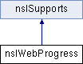

类 nsIWebProgress 继承关系图:

Public 成员函数 | |
| nsresult | AddProgressListener (nsIWebProgressListener *aListener, uint32_t aNotifyMask) |
| nsresult | RemoveProgressListener (nsIWebProgressListener *aListener) |
| nsresult | GetDOMWindow (nsIDOMWindow **aDOMWindow) |
| nsresult | GetDOMWindowID (uint64_t *aDOMWindowID) |
| nsresult | GetIsTopLevel (bool *aIsTopLevel) |
| nsresult | GetIsLoadingDocument (bool *aIsLoadingDocument) |
| nsresult | GetLoadType (uint32_t *aLoadType) |
 Public 成员函数 继承自 nsISupports Public 成员函数 继承自 nsISupports | |
| nsresult | QueryInterface (nsIIDRef riid, void **result) |
| nsrefcnt | AddRef () |
| nsrefcnt | Release () |
该接口的文档由以下文件生成:
- E:/ReactOS-0.4.6/dll/win32/mshtml/nsiface.idl